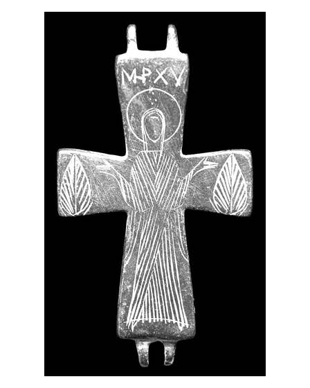

Catalog › CE-0394 · APH2017-13
Valvă izolată de encolpion din aliaj de cupru, cat. 13, Aphrodisias
a doua jumătate a sec. X – sec. XI (951–1100) · Turcia
single valve of a reliquary cross, altul; a doua jumătate a c. X – sec. XI (951–1100); find spot unknown.


Identificare
- Categorie
- Valvă izolată
- Material
- Altul
- Tehnică
- Gravare (incizie)
- Dimensiuni
- Î 85 × L 48 × Gr 5 mm
Iconografie
- Avers
- Maica Domnului Orantă
- Descriere avers
- O singură valvă cu desen gravat, cu cârlige de balama intacte la fiecare capăt al brațului vertical; suprafața lustruită neted, încât unele linii, mai ales la centru, sunt parțial șterse; toate brațele ușor lărgite. Maica Domnului orantă poartă o tunică ale cărei cute sunt trase în linii paralele incizate repede; capul e un oval gol, bine proporționat; gluga maphorionului din câteva linii căzătoare; nimbul e un cadru circular larg. La capetele stâng și drept ale brațelor transversale motive de frunze. Deasupra nimbului invocația Μ[ητέ]Ρ Χ[ριτο]Υ.
- Inscripții
- Μ[ητέ]Ρ Χ[ριτο]Υ
- Limba
- Greacă
Datare și atribuire
- Datare
- a doua jumătate a sec. X – sec. XI (951–1100)
- Centru
- Necunoscut
- Tipologie
- Pitarakis (2006), forma tip I
Descoperire
- Țară
- Turcia
- Context
- Colecție (fără context)
Păstrare și referințe
- Nr. inventar
- 4145
- Bibliografie
- H. Jeffery, The Archaeology of Middle Byzantine Aphrodisias, teză DPhil în arheologie clasică, University of Oxford, aprilie 2019 [Jeffery 2019], vol. 3 (Figures), Descriptive Catalogue Four: Copper Alloy Reliquary Crosses, cat. nr. 13 (paginile nu sunt numerotate în PDF; p. PDF 443), fotografie reprodusă la p. PDF 442.
- Figura
- fotografie în catalog, fără număr de figură
- Planșe
- Jeffery 2019, vol. 3, Cat. Four, p. PDF 442
- Analogii
- Pitarakis (2006), nr. 235–285.
- Observații
- Locul descoperirii indicat ca „alleged”: Karahisar. Numărul de inventar e de muzeu. Același tip ca cat. 6, produs în Anatolia și la Constantinopol; stilul diferă mult, cu linii și proporții de o eleganță deosebită. Dimensiuni: L. 8,5 × l. 4,8 × gros. 0,5 cm. Material: „copper alloy” (aliaj de cupru) în sursă. Coordonate: nu sunt date în sursă.
Citare: Corpus Encolpiorum, CE-0394, Valvă izolată de encolpion din aliaj de cupru, cat. 13, Aphrodisias, https://vitaliejosanu1979-ux.github.io/primul-meu-proiect/piese/APH2017-13/ (accesat 2026-10-17).